Олена Коваль2 год тому
Дочитала «Місто» — тепер розумію, чому його всі радять. Наступним беру «Тіні забутих предків».
Відьма на вимогу
62Зберегти
Застосунок має відчуватися як книжка на столі під лампою: папір, чорнило й тепле світло лише там, де звучить книга. Нижче — що зараз читається як застаріле, сам напрям, токени, екрани та точні розміри.
Проблема не в окремій кнопці. Застосунок виглядає як стрімінговий плеєр 2021 року, а не як бібліотека українських аудіокнижок 2026-го.
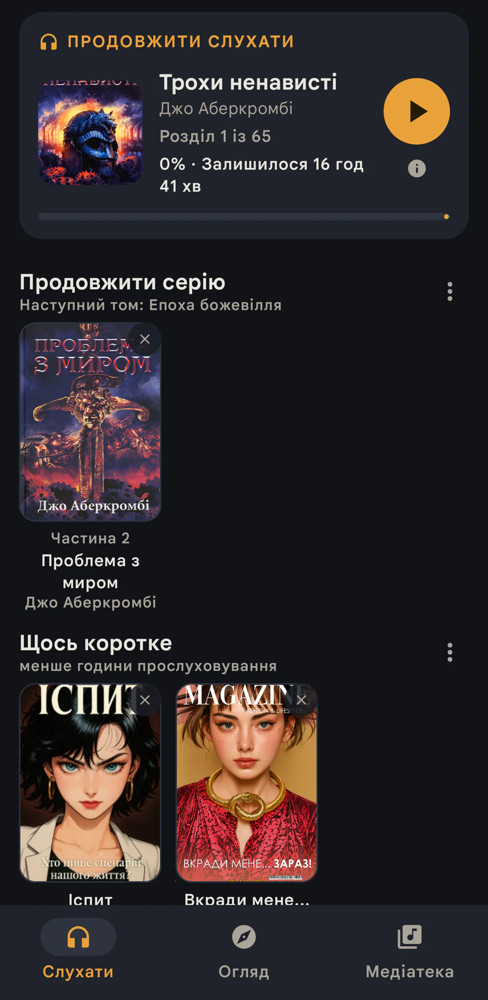
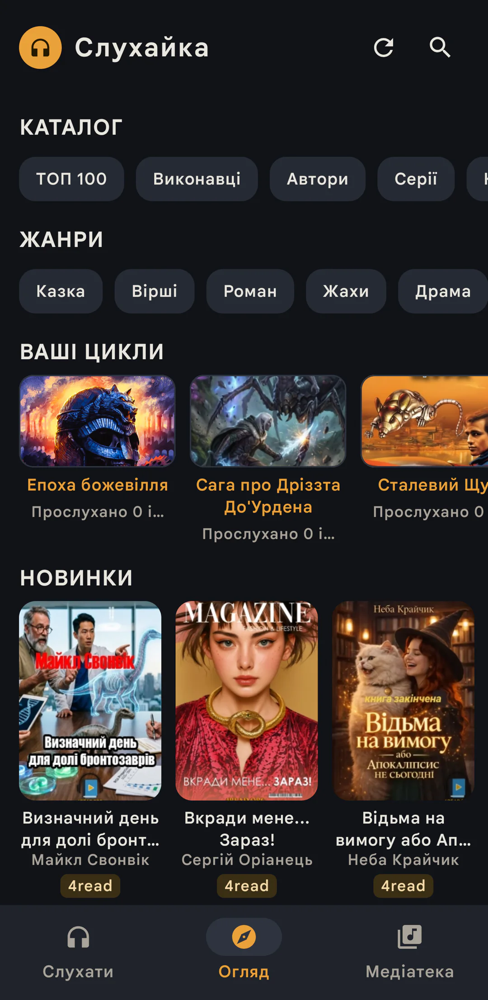
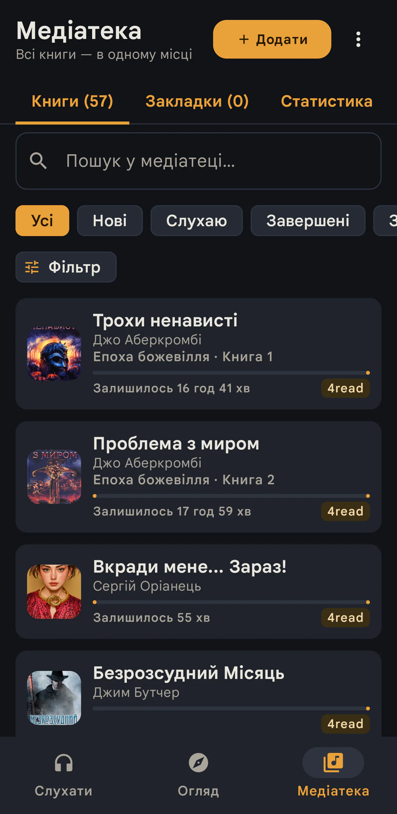
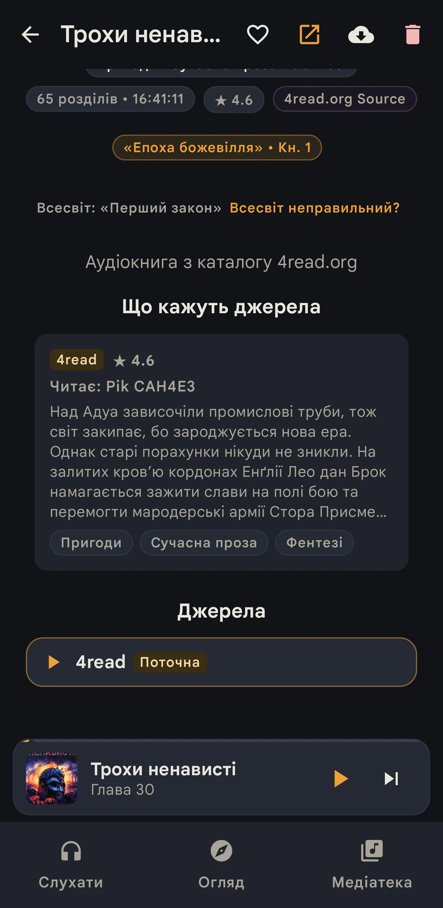
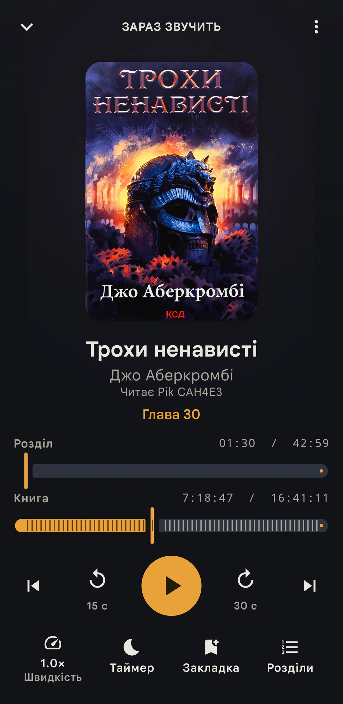
Темний графіт із бурштиновим акцентом — це мова музичних сервісів. Книжкового характеру немає ні в кольорі, ні в матеріалі, ні в типографіці.
Roboto з додатним трекінгом, підписи 11 sp і капс у бурштині. Дрібно, рівно й ніяк — так виглядає будь-який застосунок, який не обирав шрифт.
Усе — картка з одним радіусом і майже без тіні. Немає глибини, немає матеріалу, немає різниці між «зараз слухаю» і «просто полиця».
Поля 16 dp, секції 24 dp, обкладинки різні, хрестики «×» поверх обкладинок, бейджі джерела конкурують із прогресом. Щільність не виглядає рішенням — вона виглядає випадковістю.
Дві смуги прогресу з різною логікою плюс третя шкала «книга». Час розділу й час книжки однакові за вагою. Підписи під транспортом — 11 sp.
Натиск не відчувається, обкладинка не переходить у плеєр, міні-плеєр не пов'язаний із великим екраном. Застосунок не показує, що в ньому щось відбувається.
Три вкладки однакові за вагою з міні-плеєром, активний стан — лише колір. На екрані «Слухати» міні-плеєр сховано, тож перехід між станами щоразу інший.
Обкладинки — єдине красиве, що є на екрані, і вони подані як іконки у списку. Немає світла, зерна, тіні, ритму — нічого, що робить книжку книжкою.
Наймасовіший екран бібліотеки показує список без жодної обкладинки: самі рядки тексту з тонкою смугою. Головний візуальний якір книги зник.
До першого рядка медіатеки — до 442 dp: заголовок, «Мій рік», таби, пошук, чипи, заголовок групи. Це до двох третин висоти екрана до першої книги.
Ті самі екрани, та сама ширина 412 dp. Порівнювати варто не кольори, а співвідношення: скільки місця займає хром, який елемент головний і що читається першим.
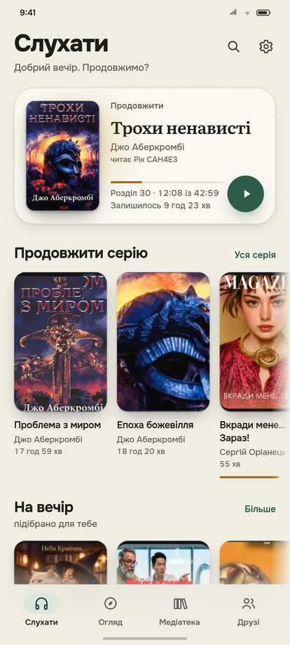
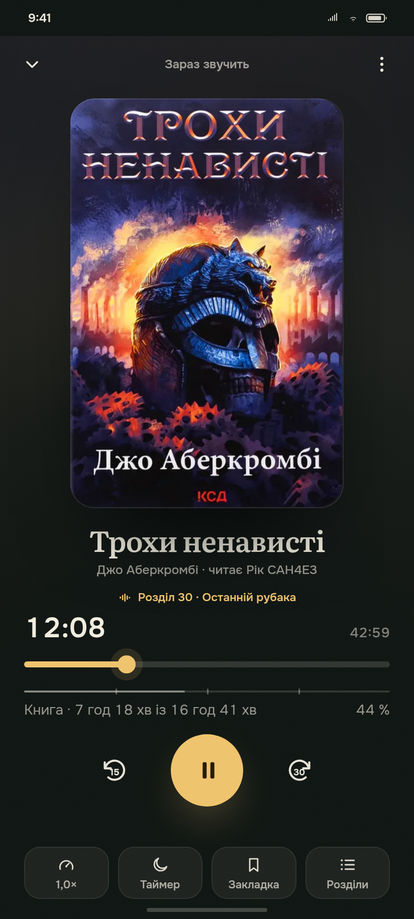
Один образ: книжка лежить на столі, поруч лампа. Папір — основа, чорнило — текст, тепле світло — тільки звук. Звідси випливає все інше.
Світла тема «Папір» — тепла, трохи сіра, без білого екрана. Темна «Чорнило» — глибокий зелений чорний, не графіт. Ієрархія, розміри й радіуси в обох темах однакові: змінюється тільки матеріал.
Бурштиновий колір є лише там, де книга звучить: активний прогрес, поточна глава, «слухаєш зараз», серія днів. Дії — зелені. Кольори мають значення, тому їх небагато.
Великі назви книжок — Literata, справжній шрифт для читання. Інтерфейс і дрібні назви — Onest із повною українською кирилицею. Жодного капсу; службові підписи — від 11 sp, усе, що читають, — від 12 sp; великі числа — табличні.
Полиці й списки стоять прямо на папері, розділені лініями та відступами. Картка — тільки для того, що зараз слухаєш. Поля 20 dp, секції 32 dp, внутрішні відступи 8/12/16 dp.
Зерно паперу 3–5 %, м'яке світло під обкладинкою, двошарова тінь, пружинні переходи 240–320 мс, тактильний відгук на перемотку й закладку. Один рух — одна причина.
Навіть у світлій темі екран відтворення — «Чорнило»: як кінотеатр, де світло вимикають. Це не налаштування, а стан: коли книга звучить, усе інше стає тихішим.
#F1EEE4#FAF8F1#1B1E18#5D6156#2E5C4B#A96A12#0E1411#161D19#ECE8DB#A4A89A#8FC9AD#EFC36CОбидві родини — OFL, тому їх можна вбудувати в APK. Literata має кілька оптичних розмірів: дрібний текст читається, великий тримає увагу. Onest має змінну вагу 100–900, тож ієрархія не потребує окремих файлів.
Вісім екранів на 412 dp: сім денних і один нічний. «Чорнило» тепер тільки плеєр — увесь інший застосунок живе на папері; демонстраційні дані, справжні розміри, одна сітка.
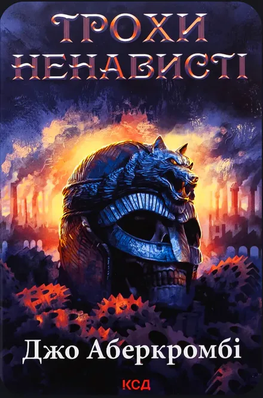
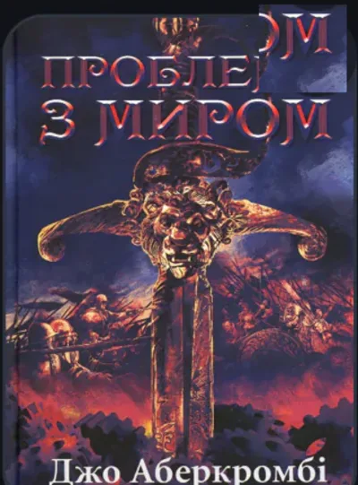
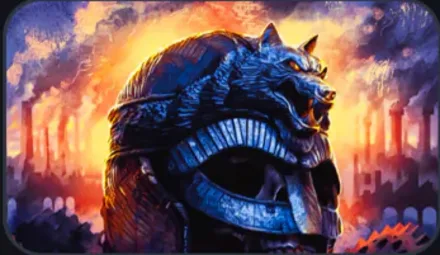
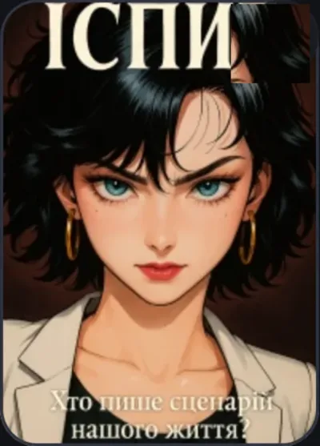
Дочитала «Місто» — тепер розумію, чому його всі радять. Наступним беру «Тіні забутих предків».
Порадьте щось коротке на дорогу до роботи. Ідеально — до години.
Темне фентезі про війну, зраду й другу спробу. Перший том трилогії «Епоха божевілля» — з тією самою іронією, що й «Перший закон», але з новими героями.
Напрям тримається не на великих екранах, а на розмірах, станах і дрібницях. Ось вони — з конкретними числами.
Одна шкала на весь застосунок: 48 / 58 / 84 / 104 / 118 / 132 / 272 dp. Радіус росте разом із розміром, тінь — двошарова, зверху тонкий світлий обідок, ніби край палітурки.
Одна головна дія на екран. Висота 52 dp, пігулка; другорядна — кругла 52 dp; іконка в шапці — 44 dp із зоною 48 dp; чип — 36 dp.
Три різні смуги для трьох різних відповідей: полиця — «скільки прослухано», розділ — «де я зараз», книга — «скільки всього». Вони ніколи не виглядають однаково.
Плаваюча пігулка 64 dp заввишки з відступом 16 dp: обкладинка 48, назва 13, час 11, кнопка 42. Скло 93 % — контент під ним не читається.
86 dp включно із системним жестом (видима смуга ≈64). Чотири вкладки за ADR-0049. Активна — пігулка 50×30 із тональним фоном, підпис видимий. Іконка 23 dp, підпис 11.5 dp.
Порожній екран — запрошення, а не вибачення. Завантаження — скелетон без стрибків висоти. Помилка — що сталося і одна дія.
Коли додасте першу книгу, вона з'явиться тут — разом із главами й прогресом.
Один рух — одна причина. Натиск майже миттєвий, переходи — пружинні. Усе підкоряється системному «зменшенню руху».
| Натискання кнопки | 120 мс · scale .97 |
| Міні-плеєр ↔ плеєр | 240 мс · spring .82 |
| Обкладинка → плеєр | 320 мс · shared element |
| Зміна вкладки | 180 мс · fade + 8 dp |
| Скрол у плеєрі | тактильні «зупинки» 5 % |
| Reduced motion | 0 мс · лише fade |
Те, що зараз пливе, і те, що пропонується. Сітка 4 dp, поля 20 dp, мінімум 48 dp на все, що натискається.
| Роль | Зараз | Пропоную | Нотатка |
|---|---|---|---|
| Сітка і відступи | |||
| Поля сторінки | 16 dp | 20 dp | планшет — 24 dp |
| Між секціями | 16 / 8 dp | 32 dp | 7 кроків → один |
| Між блоками | 8–14 dp | 16 dp | один крок замість п'яти |
| Всередині блока | 8–12 dp | 8 / 12 / 16 dp | три дозволені ступені |
| Базова одиниця | не зафіксована | 4 dp | усе кратне чотирьом |
| Типографіка | |||
| Заголовок екрана | 32 sp / 40 / −1.2 | 34 / 36 / −1.1 | Onest ExtraBold, 1 роль |
| Назви книг | 12–28 sp, без шкали | 24 герой · 25 сторінка · 28 плеєр | Literata 600 |
| Заголовок секції | 20 sp / 26 / −0.5 | 21 / 26 / −0.45 | Onest Bold |
| Назви в рядках | bodySmall 12 sp | 13.5 картка · 15 рядок | Onest 600 |
| Основний текст | 16 / 24 | 16 / 24 | без змін |
| Другорядний текст | 11–14 / 20 | 13.5 / 19 | 11 sp — лише підписи |
| Підписи | 11 sp × 63 місця | 12 / 16 · мікро 11 | менше 11 sp — заборонено |
| Час і цифри | 12 sp mono | tabular у Onest · 28 у плеєрі | без стрибків секунд |
| Радіуси | 2 / 6 / 8 / 10 / 12 / 14 / 24 / 999 | 8 / 12 / 16 / 24 / 28 / full | шкала M3, вкладені кути концентричні |
| Обкладинки | |||
| Полиця | 120×180 · r12 | 132×198 · r16 | більше книжки, менше рамки |
| Герой «продовжити» | 128 dp, поворот 9° | 104×156 · r12 | більший за постер, без нахилу |
| Рядок медіатеки | обкладинки немає (dense rows) | 58×87 · r12 · рядок 112 dp | повертаємо якір книги |
| Компактний рядок | 44 dp | 48×72 · r8 | «Коротке» на «Слухати» |
| Добірка / обране | без єдиного розміру | 84×126 · r12 | редакційна панель і «Обране» |
| Сторінка книги | full-bleed, 72 % висоти | 118×177 · r16 | дії видно без скролу |
| Плеєр | 208×315 dp (стеля 215) | 272×408 · r24 | найбільший об'єкт екрана, вміщається в 915 |
| Компоненти й натискання | |||
| Нижня навігація | 80 dp + insets | 86 разом із жестом | 4 вкладки, пігулка 50×30 |
| Міні-плеєр | 83 dp у потоці (панель 72) | 64 dp · плаває | скло 93 %, поля 16 dp |
| Головна кнопка | 48–56 dp | 52 dp · пігулка | одна на екран |
| Іконка в шапці | 48 dp | 44 dp (+8 зона) | візуально легше |
| Чип | 36 dp, підлога 24 dp | 36 dp · зона 48 dp | фізика дотику однакова |
| Сік-бар / рядок розділу | 24 dp Canvas + слайдери | 44 dp / 44 dp | один seek-компонент |
| Транспорт плеєра | 48 / 80×72 dp | 52 / 72 dp | більше головної дії |
| Хром медіатеки | ≈442 dp до рядка | ≈235 dp (вимір) | пошук — іконка, статистика — таб |
| Таймер сну | шит 450 dp, 8 рядків | шит 280 dp, 2×4 пігулки | той самий вибір |
| Смуги прогресу | 6 механізмів: 3/4/6 dp + 2 слайдери | 3 / 6 / 2 dp | полиця / розділ / книга |
| Адаптив | |||
| Компактний < 600 dp | одна колонка | одна колонка, поля 20 | телефон |
| Середній 600–839 | розтягується | 2 колонки полиць | складний телефон/планшет |
| Широкий ≥ 840 | немає | список + деталі, рейл 88 | плеєр — бічна панель 420 |
Напрям входить у наявну архітектуру: спершу токени, потім каркас і три екрани, далі плеєр. Інформаційна архітектура й потоки не змінюються.
Color.kt, Type.kt, Dimens.kt, Theme.kt. Literata + Onest в APK, оновлені контраст- і снапшот-тести.
AppTabHeader, навігація, міні-плеєр, PosterCard, BookRow. Спільні примітиви за ADR-0033.
Слухати, Огляд, Медіатека. Полиці й рядки переходять з карток на папір; зникають хрестики й бейджі-конкуренти.
Одна смуга розділу, книга 2 dp, транспорт 52/72, нічний плеєр у світлій темі, shared element обкладинки.
Кільце цілі й реєстр відзнак; теми «Авто / Папір / Чорнило» і щільність; стрічка друзів на тих самих примітивах.
Веб-плеєр отримує ті самі токени; широкі макети — двопанельні, рейл 88, плеєр-панель.
Прототип пройшов окремий рев'ю. Нижче — що виправлено після нього, щоб цифри на дошці й у спеці збігалися з рендером.